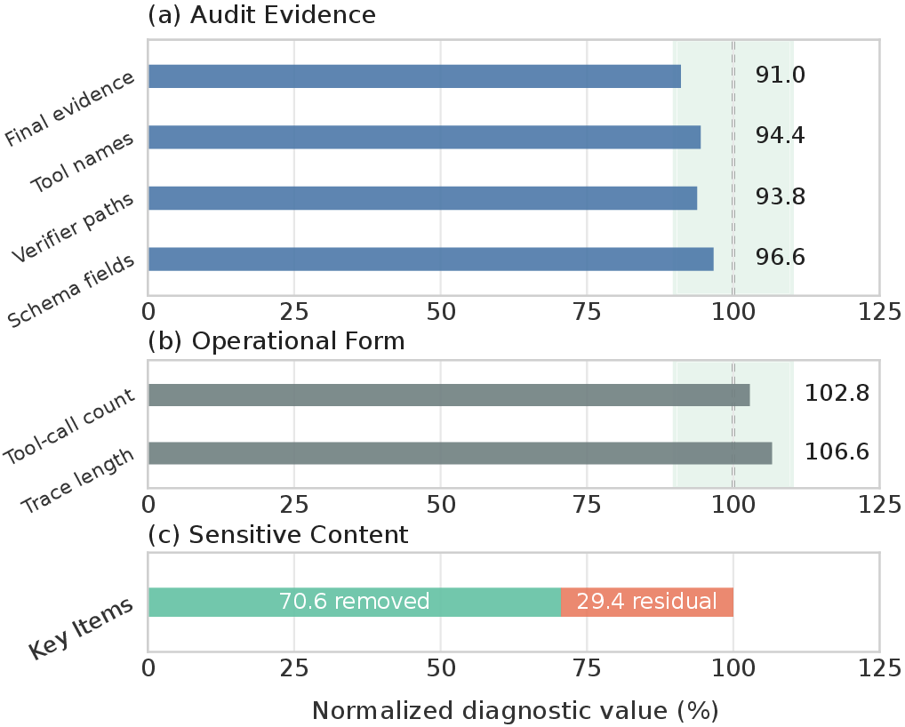

Key-Item Localization
Identify formulas, constants, thresholds, specialized tools, validation routines, and private heuristics from the skill package.
Users rely on execution traces to observe agent behavior, diagnose failures, and ensure accountability. These traces contain rich procedural detail, including tool invocations, intermediate decisions, and error-recovery logic. RedAct addresses the tension between auditability and capability protection. It localizes protected key information, rewrites traces while preserving verifier-critical evidence, and injects behavioral watermarks for downstream provenance analysis. Across representative trace reuse methods, RedAct reduces normalized skill transfer from 44.7-67.1% on raw traces to below the no-skill baseline, while preserving the execution evidence needed to inspect what the agent did. Conceptually, RedAct reframes trace release as a controlled publication problem: the released artifact should still explain what happened during execution, but it should not expose a reusable recipe for reconstructing the owner's private skill.
Raw traces may reveal formulas, calibrated thresholds, tool choices, validation routines, and recovery strategies. RedAct treats trace release as a security interface: informative enough to audit, abstract enough to avoid direct procedural reuse.
This risk is especially relevant for long-horizon tool-using agents, where the value often lies not only in the final answer, but in the sequence of checks, tool calls, fallbacks, and domain-specific choices that led to it.

CapTraceBench contains specialized long-horizon tasks with task-local skill files, executable environments, and automatic verifiers for final success and step-level progress.
Each task is built around procedural knowledge that is useful for solving the environment but should not be trivially recoverable from a public trace. This makes the benchmark a stress test for protected trace release rather than a generic agent benchmark.

RedAct is deployed by the skill owner before trace publication. It sees the protected skill package, identifies private procedural items, releases an auditable protected trace, and optionally attaches behavioral provenance hooks.
The framework separates two goals that are often conflated: utility for human inspection and utility for downstream skill reconstruction. RedAct preserves the former while suppressing the latter.

Identify formulas, constants, thresholds, specialized tools, validation routines, and private heuristics from the skill package.
Abstract reusable procedural details while preserving execution order, tool-use evidence, final outputs, and verifier-critical fields.
Insert neutral hooks such as Env Check and Ritual Marker that can persist in downstream students for provenance analysis.
Watermark hooks are functionally neutral action-observation patterns inserted into eligible protected traces. Standalone hooks provide broad provenance signals, while contextual hooks depend on tool observations or error states.
Ritual MarkerStandalone action pattern at task start or end.
Env CheckBenign environment-probing action.
Cross CheckContextual verification after tool observations.
Error AnchoringContextual recovery phrase after error feedback.
The main table compares no skill access, oracle skill access, raw-trace reuse, and RedAct-protected trace reuse. We report success rate (SR) and step success rate (SSR) across six evaluated harness/model backends plus their average.
Synthesizes a reusable SKILL.md document and supporting scripts from released trajectories.
Refines induced skills over multiple analyzer/evolver passes using successful and failed trajectories.
Indexes released traces and injects top-k similar snippets as in-context demonstrations at inference time.
Fine-tunes a student on released trajectories to evaluate whether behavioral provenance signals persist.
| Setting | Diff. | Claude Opus 4.6 | Claude Sonnet 4.6 | Claude Haiku 4.5 | GPT-5.2 Codex | Gemini 3 Pro | Gemini 3 Flash | Average | |||||||
|---|---|---|---|---|---|---|---|---|---|---|---|---|---|---|---|
| SR | SSR | SR | SSR | SR | SSR | SR | SSR | SR | SSR | SR | SSR | SR | SSR | ||
| No Skills | Easy | 68.8 | 84.0 | 70.5 | 80.6 | 65.3 | 79.1 | 71.3 | 86.7 | 72.3 | 83.6 | 69.2 | 83.4 | 69.6 | 82.9 |
| Medium | 42.3 | 71.9 | 36.2 | 66.1 | 27.5 | 60.9 | 41.3 | 71.5 | 41.8 | 67.9 | 37.8 | 67.0 | 37.8 | 67.5 | |
| Hard | 44.0 | 58.4 | 29.1 | 48.9 | 20.5 | 39.3 | 38.8 | 60.7 | 37.6 | 50.8 | 29.4 | 49.5 | 33.2 | 51.3 | |
| Avg. | 49.8 | 72.1 | 43.7 | 66.1 | 36.0 | 60.9 | 48.7 | 73.1 | 49.0 | 68.2 | 44.3 | 67.4 | 45.2 | 68.0 | |
| w/ Oracle Skills | Easy | 81.4 | 91.1 | 78.2 | 85.9 | 73.2 | 83.5 | 85.5 | 91.9 | 79.4 | 88.0 | 77.0 | 86.6 | 79.1 | 87.8 |
| Medium | 61.5 | 81.5 | 48.0 | 72.4 | 47.9 | 72.1 | 62.7 | 82.1 | 54.9 | 76.0 | 49.6 | 73.5 | 54.1 | 76.3 | |
| Hard | 48.9 | 69.7 | 46.7 | 65.8 | 24.4 | 43.5 | 45.2 | 72.9 | 44.5 | 66.9 | 43.2 | 62.0 | 42.1 | 63.5 | |
| Avg. | 64.0 | 81.4 | 55.8 | 74.5 | 49.3 | 68.7 | 64.8 | 82.6 | 59.1 | 77.1 | 55.5 | 74.4 | 58.1 | 76.5 | |
| Raw Traces | |||||||||||||||
| w/ Extracted Skills | Easy | 80.0 | 87.0 | 76.7 | 82.5 | 70.5 | 81.4 | 78.3 | 91.5 | 75.3 | 86.5 | 75.8 | 85.0 | 76.1 | 85.6 |
| Medium | 55.0 | 80.5 | 46.3 | 69.5 | 43.0 | 70.0 | 50.7 | 77.4 | 48.9 | 76.5 | 47.6 | 71.2 | 48.6 | 74.2 | |
| Hard | 47.1 | 67.5 | 44.9 | 58.3 | 21.0 | 42.1 | 43.2 | 68.0 | 41.9 | 54.7 | 38.7 | 56.4 | 39.5 | 57.8 | |
| Avg. | 59.9 | 79.3 | 54.1 | 70.4 | 45.3 | 66.7 | 56.4 | 79.0 | 54.4 | 74.2 | 53.1 | 71.5 | 53.9 | 73.5 | |
| w/ Evolved Skills | Easy | 74.5 | 86.0 | 74.5 | 82.7 | 69.8 | 81.2 | 74.5 | 89.4 | 79.5 | 86.0 | 75.4 | 85.5 | 74.7 | 85.1 |
| Medium | 45.3 | 75.5 | 39.5 | 69.1 | 41.4 | 71.7 | 49.3 | 75.2 | 50.8 | 75.9 | 43.2 | 70.5 | 44.9 | 73.0 | |
| Hard | 49.1 | 61.4 | 40.2 | 62.5 | 31.7 | 48.8 | 42.5 | 69.5 | 41.3 | 64.6 | 42.1 | 63.8 | 41.1 | 61.8 | |
| Avg. | 53.9 | 75.1 | 49.0 | 71.2 | 46.8 | 69.0 | 54.5 | 77.7 | 56.3 | 76.0 | 51.5 | 73.0 | 52.0 | 73.7 | |
| w/ Retrieval Reuse | Easy | 73.8 | 86.0 | 73.6 | 82.7 | 68.9 | 81.2 | 76.0 | 89.1 | 77.2 | 85.8 | 73.5 | 85.5 | 73.8 | 85.0 |
| Medium | 44.9 | 74.8 | 38.8 | 68.6 | 36.2 | 64.6 | 47.2 | 74.4 | 48.0 | 73.2 | 42.0 | 69.8 | 42.9 | 70.9 | |
| Hard | 47.8 | 61.0 | 35.5 | 57.8 | 25.9 | 43.2 | 41.8 | 66.8 | 40.5 | 60.7 | 38.5 | 59.2 | 38.3 | 58.1 | |
| Avg. | 53.3 | 74.7 | 47.3 | 69.9 | 42.6 | 64.2 | 53.7 | 76.6 | 54.1 | 73.7 | 49.6 | 71.6 | 50.1 | 71.8 | |
| Traces Protected by RedAct | |||||||||||||||
| w/ Extracted Skills | Easy | 72.5 | 80.9 | 71.0 | 81.9 | 61.5 | 76.0 | 70.0 | 82.0 | 74.5 | 78.8 | 66.4 | 80.5 | 69.3 | 80.0 |
| Medium | 43.2 | 67.2 | 38.6 | 61.3 | 28.4 | 62.8 | 43.8 | 72.4 | 42.5 | 68.9 | 37.4 | 63.0 | 39.0 | 65.9 | |
| Hard | 41.1 | 57.5 | 38.2 | 57.8 | 20.5 | 42.7 | 37.2 | 64.5 | 35.3 | 55.8 | 35.8 | 58.6 | 34.7 | 56.1 | |
| Avg. | 50.5 | 68.7 | 47.1 | 66.0 | 35.4 | 61.8 | 49.3 | 73.2 | 49.4 | 68.6 | 44.8 | 66.7 | 46.1 | 67.5 | |
| w/ Evolved Skills | Easy | 67.6 | 82.1 | 68.4 | 78.9 | 64.1 | 77.6 | 69.8 | 84.8 | 70.4 | 81.4 | 67.3 | 81.2 | 67.9 | 81.0 |
| Medium | 41.1 | 70.4 | 35.0 | 64.4 | 26.8 | 59.6 | 40.0 | 69.6 | 40.5 | 66.0 | 36.9 | 65.2 | 36.7 | 65.9 | |
| Hard | 42.8 | 57.1 | 28.4 | 47.6 | 20.0 | 38.2 | 37.6 | 59.2 | 36.4 | 49.4 | 28.6 | 48.1 | 32.3 | 49.9 | |
| Avg. | 48.6 | 70.5 | 42.4 | 64.5 | 35.2 | 59.5 | 47.4 | 71.3 | 47.5 | 66.3 | 43.1 | 65.6 | 44.0 | 66.3 | |
| w/ Retrieval Reuse | Easy | 66.8 | 81.7 | 67.9 | 78.0 | 63.5 | 76.5 | 68.9 | 83.8 | 69.7 | 80.8 | 66.7 | 80.7 | 67.2 | 80.2 |
| Medium | 40.6 | 69.6 | 34.4 | 63.5 | 26.2 | 58.8 | 39.2 | 68.8 | 39.7 | 65.2 | 36.2 | 64.4 | 36.1 | 65.0 | |
| Hard | 42.4 | 56.6 | 27.8 | 47.0 | 19.7 | 37.8 | 37.1 | 58.4 | 35.9 | 48.8 | 28.1 | 47.6 | 31.8 | 49.4 | |
| Avg. | 48.0 | 69.9 | 41.8 | 63.6 | 34.7 | 58.8 | 46.6 | 70.4 | 46.8 | 65.6 | 42.5 | 64.9 | 43.4 | 65.5 | |
Lower protected-trace scores indicate less transferable procedural utility from the released trace. RedAct pushes all three reuse channels to no higher than the no-skill baseline on average.
Standalone hooks produce the clearest detection signal after trajectory fine-tuning, while contextual hooks remain selective and introduce no false alarms in this evaluation. TD reports true detection rate, and FA reports false alarm rate.
| Type | Watermark | Qwen3-8B | Qwen3-4B | ||
|---|---|---|---|---|---|
| TD | FA | TD | FA | ||
| Standalone | Env Check | 93.6 | 1.3 | 96.4 | 1.9 |
| Standalone | Ritual Marker | 100.0 | 0.0 | 99.8 | 0.0 |
| Contextual | Cross Check | 18.5 | 0.0 | 16.4 | 0.0 |
| Contextual | Error Anchoring | 28.3 | 0.0 | 32.2 | 0.0 |
Raw traces expose procedural utility: extraction, evolution, and retrieval reuse reach 71.8-73.7% average step success. After RedAct rewriting, the same reuse methods fall to 65.5-67.5%. Normalized Skill Transfer drops across extraction, evolution, and retrieval reuse, often moving below the no-skill baseline.

After RedAct rewriting, NST becomes non-positive across extraction, evolution, and retrieval reuse. RPI also falls by 37-48%, indicating less recovered protected key information in downstream artifacts while preserving audit-critical execution evidence.

Protected traces retain 91.0-96.6% of final answers, tool names, verifier paths, and schema fields from raw traces, while removing 70.6% of protected key items. This supports trace release as an auditable artifact rather than an answer-only summary.

Generic rewriting still leaves reusable signal in released traces. Explicit key-item localization pushes NST below the no-skill baseline across all three reuse methods and reduces recovered protected information in downstream artifacts.
| Reuse Method | Rewrite Type | SR | SSR | NST | RPI |
|---|---|---|---|---|---|
| Extracted Skills | Key-Item (Ours) | 50.5 | 68.7 | -36.6 | 20.4 |
| Extracted Skills | Generic | 55.6 | 76.9 | 51.6 | 27.6 |
| Evolved Skills | Key-Item (Ours) | 48.6 | 70.5 | -17.2 | 21.1 |
| Evolved Skills | Generic | 52.8 | 74.2 | 22.6 | 29.4 |
| Retrieval Reuse | Key-Item (Ours) | 48.0 | 69.9 | -23.7 | 14.1 |
| Retrieval Reuse | Generic | 57.9 | 72.3 | 2.2 | 15.7 |
These demos compare raw and protected trajectories from the released benchmark traces. Raw trajectories highlight reusable key items in light red; protected trajectories highlight rewritten assistant text in light orange and injected watermark text in light purple.
@misc{xu2026redactredactingagentcapability,
title={RedAct: Redacting Agent Capability Traces for Procedural Skill Protection},
author={Shuwen Xu and Zhitao He and Yi R. Fung},
year={2026},
eprint={2606.10813},
archivePrefix={arXiv},
primaryClass={cs.CR},
url={https://arxiv.org/abs/2606.10813},
}